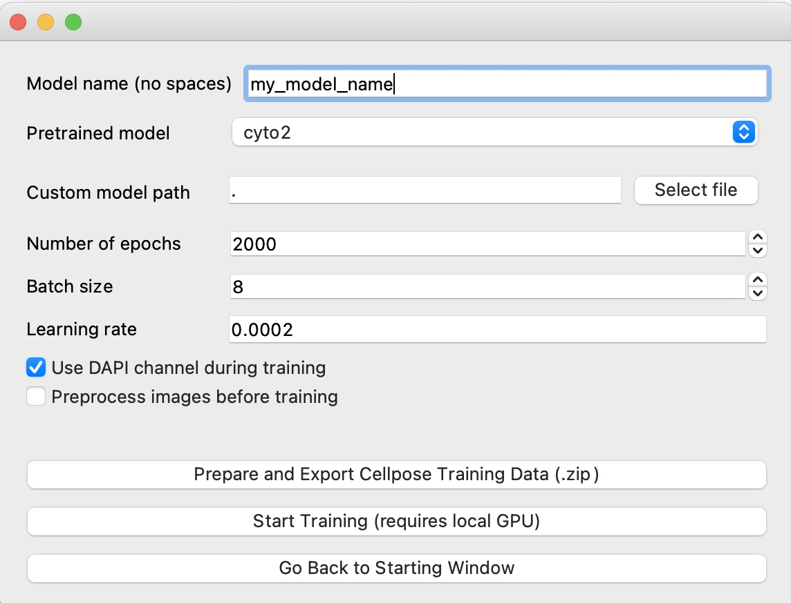

Train Cellpose Models¶
After having manually annotated all the regions of interest that you selected (make sure that ALL cells have been annotated), then you can proceed with the training of a custom cellpose model by clicking on the Configure Training of Custom Cellpose Model button on the main window of the traincellpose tool.
Note
In cellpose>=2.0 you can also train a model directly from the graphical interface. The tools provided here achieve similar results, but they also allows you to set custom cellpose training parameters via config file (even those that are not exposed to the graphical interface), and conveniently train a model via the browser using a remote machine with GPU and CUDA support (see Cellpose training server tool for more details).
{kind=link}
Training configuration¶
In the ideal case, you won’t need to change any training parameter and just leave the default values. For more details about the training parameters, see the Cellpose documentation.
{kind=link}
Tip
Depending on how your images look like, you may want to tick the Preprocess images before training option to auto-adjust image saturation of the images. You can also call some custom preprocessing functions by defining them in the PROJ_DIR/Configurations/main_config.yml config file, in its preprocessing section.
Note
If there is an extra training parameter that cannot be set using the graphical interface, you can conveniently set it via config file. See next section for more details.
Generating Training Data¶
Once you have chosen the training parameters, you can click on the Prepare and Export Cellpose Training Data button. This will open a file manager window with the training data folder (found in PROJ_DIR/CellposeTraining/my_model_name) and a compressed version of it, in case you plan to move the data to another machine with GPU where training will be performed.
Tip
You can also generate training data directly via command line. Simply run the following command:
traincellpose setup_training --model_name my_model
This will generate a new training data folder using the default GUI training parameters (or the last ones you set via the GUI). You can update them later by modifying the generated config file.
Format of Training Data¶
The folder with the training data contains the following files:
A config file
train_config.ymlwith cellpose parameters that will be used for training (and can be easily updated with any extraargsandkwargsthat will be passed to the command line cellpose training command)Training images placed in the
training_imagessubdirectory: if needed you can add external training images.
Note
Keep in mind that the cellpose input images generated by the traincellpose tool are such that the green channel represents the main segmentation channel and the red channel is the DAPI channel (otherwise set to zero if DAPI is not present)
Starting the Training¶
Once you are done setting the training parameters and the training data has been generated, you have few options to start the training:
If your machine has a GPU with CUDA support and you installed
traincellposewith GPU support (see instructions here), then you can simply start the training locally by clicking on theStart Trainingbutton. In principle you could also start training with the CPU version of PyTorch, but then training will take a much longer timeIf your machine does not have a GPU, then you can also install the TrainCellposeServer tool on a server with GPU support and then training your model by simply drag and dropping the zipped training data via a browser. For more details and instructions, see Cellpose training server tool
Alternatively, you can load the generated training images in the
cellpose>=2.0interface and train your model there (also in this case you will need a local GPU on your machine)
Tip
In case you do not have access to a graphical interface, you can also start the training via command line:
traincellpose train --model_name my_model
Web interface for training your model remotely:

Getting the trained model¶
At the end of the training process, the trained model file will be saved inside the training data directory. Currently, there is no way to test a cellpose model using the traincellpose tool, but you can do that via the cellpose interface by predicting a segmentation using the custom model you trained.